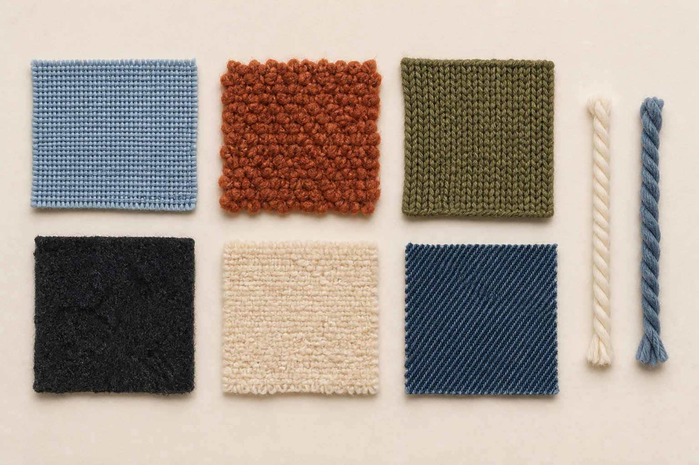
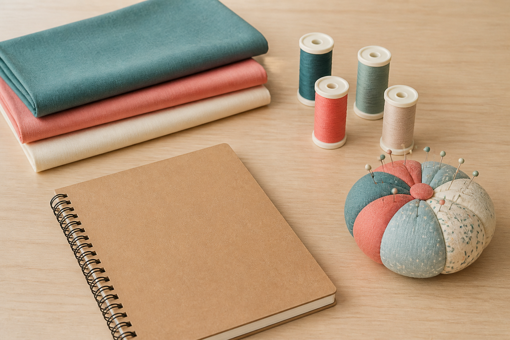
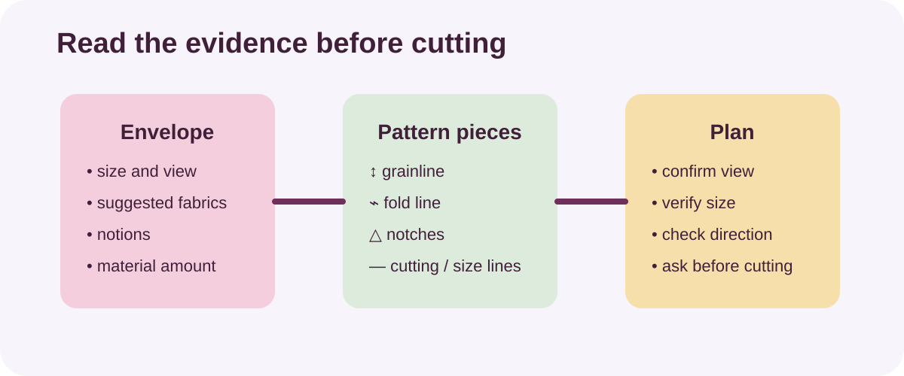
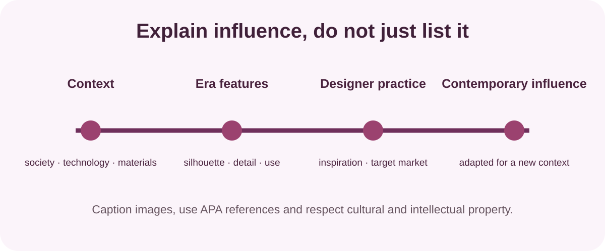
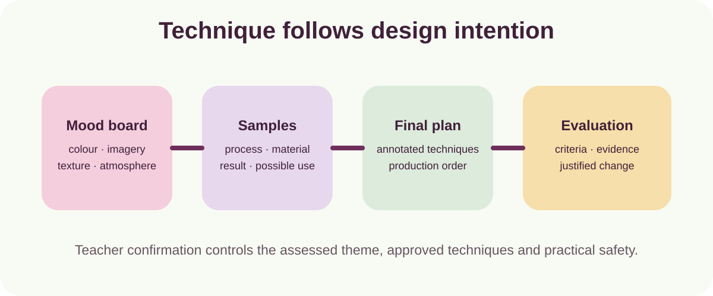

Learn
Read one focused explanation and use its diagram or source visual.
Year 9 · Textiles Technology
Build practical confidence, understand textile materials and turn ideas into wearable and decorative textile products.

Your year in textiles
You will move from safe room routines and design foundations into pyjamas, hoodies, fashion research and textile art. Each module teaches a manageable part of the process.
Read one focused explanation and use its diagram or source visual.
Answer ten questions for each named theory section.
Use the idea in a design, research or practical evidence task.
Keep labelled writing in My folio and export a backup.
Your writing autosaves on this device. It is learning evidence, not a Classroom submission.

Eight-module pathway
Start at Module 1 or return to the point your class is working on.

Wearable design
Read commercial-pattern information, investigate fibres and fabrics, develop design ideas and record decisions as the apparel projects take shape.
Explore design and patterns
Designer research
Investigate fashion eras, designer practice, target markets and respectful research before creating a clear two-part magazine.
Open the completed learning pattern
Textile art
Experiment, compare results, annotate the final plan and evaluate how successfully the finished artwork communicates its intention.
Explore Textile ArtKeep the thinking, not just the product
Review saved responses, print a clean record or download a backup before changing devices.